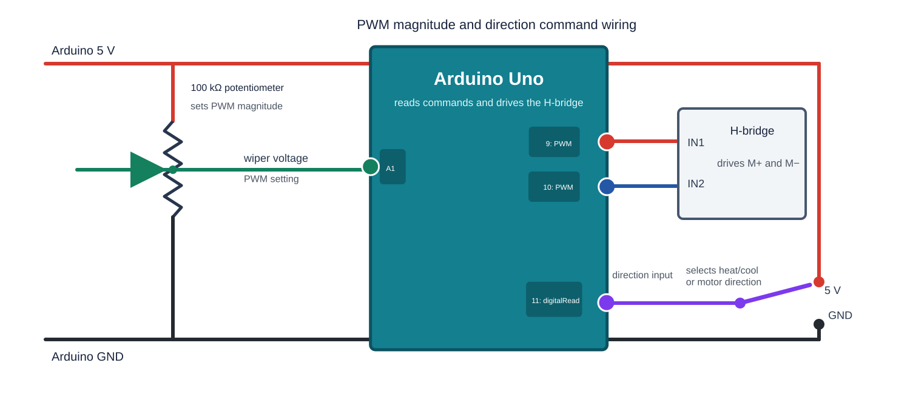
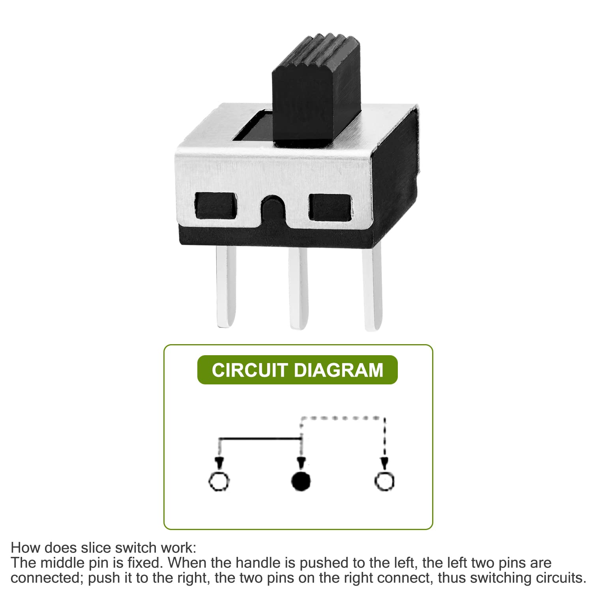

Module 3 Assignment: Manual TEC Heat/Cool And First Python GUI¶
Module At A Glance¶
Module 3 connects temperature measurement to thermal actuation. You replace the Module 2 motor with the TEC and thermal switch, operate the TEC manually at low power, and build a Python interface that displays and then controls the instrument. This is still open-loop manual control, not feedback control.
| Session | Principal result |
|---|---|
| S5 | Wire the TEC safely; write two manual Arduino sketches; identify heating and cooling; compare Arduino and H-bridge PWM signals. |
| S6 | Write a display-only Python temperature strip chart and save labeled data. |
| S7 | Add Python controls; write the matching serial-command Arduino sketch; complete the integrated test and C3 checkpoint. |
Safety Boundary¶
Before current is applied to the TEC:
- PWM starts at zero.
- The Module 2 motor test and H-bridge input verification are complete with the TEC disconnected.
- Arduino ground, H-bridge ground, and oscilloscope ground are understood.
- The thermal safety cutoff is identified.
- The prepared high-current wiring and thermal-switch connections have been inspected for loose or damaged connections.
- The heat-exchanger pump and fans are operating from the 12 V supply.
- The instructor has approved the wiring and power-supply current limit.
Stop immediately if the TEC or driver heats unexpectedly, the temperature changes too rapidly, the power-supply current is too high, or the serial trace disappears.
Before Class¶
- Review your Module 2 thermistor conversion notes.
- Review which Arduino pins drive the H-bridge on the class board.
- Locate your Module 2 Arduino sketch in VS Code. Identify the thermistor input, trim-pot input, two H-bridge outputs, and direction input.
- Confirm that your Python environment has
pyserial,PySide6, andpyqtgraph, following the Getting Started page.
Outside-Class Workload Budget¶
| Session | Work | Planned time |
|---|---|---|
| S5 | Read the assignment; review wiring and prior code; inspect the strip-chart structure | 2 hours |
| S6 | Develop the display-only GUI; update run instructions and questions | 2 hours 30 minutes |
| S7 | Develop and test GUI controls and serial-command code; organize C3 evidence | 3 hours |
Stop when the planned time is exhausted. Preserve the current working state and bring a precise description of the blocker to class; do not trade away safety or understanding to finish an AI-generated feature.
Pre-Class Questions¶
- Why should the H-bridge be checked with the oscilloscope before the TEC power supply is turned on?
- What does PWM control in this experiment?
- Why is heat/cool direction a physical question, not only a software label?
- What part of the GUI code do you expect to modify first?
Part 1: TEC Wiring And Pre-Power Checklist¶
Do not begin until the instructor starts the TEC session. Turn off actuator
power, remove the Module 2 motor, and connect the prepared 18 AWG TEC and
thermal-switch wiring. The power-supply V+ and V- leads connect directly
to H-bridge B+ and B-; they do not go through the terminal block.
Connect the TEC heat exchanger directly to the 12 V power supply, with its
positive lead connected to V+ and its negative lead connected to V-.
Before applying current to the TEC, verify that the heat-exchanger pump and
radiator fans are operating. Do not operate the TEC without its heat exchanger
running.

Open the complete Arduino, H-bridge, TEC, and thermal-switch wiring diagram full size
Physical Wiring On The Class Apparatus¶
Use the labels on your apparatus and the photograph below. The three isolated
terminal-bus pairs connect H-bridge M+ to one thermal-switch lead, the other
thermal-switch lead to TEC+, and TEC- to H-bridge M-. Opening the normally
closed thermal switch therefore interrupts the TEC current. Most setups have
prepared wires. If your setup lacks any of the two 18 AWG thermal-switch leads
or four 18 AWG H-bridge leads, consult the instructor and use the fabrication
appendix at the end of this module.

Open the labeled class-apparatus photograph full size
Before turning on TEC power, fill in this checklist in your module notes.
| Item | Value Or Observation |
|---|---|
| Arduino board and port | |
| Thermistor pin | |
| H-bridge control pins | |
| PWM starts at zero? | |
| Module 2 motor test completed with TEC disconnected? | |
| High-current leads are 18 AWG? | |
| Prepared TEC and thermal-switch wiring inspected? | |
| Heat exchanger connected to 12 V and operating? | |
| Power supply voltage | |
| Power supply current limit | |
| Thermal cutoff identified? | |
| Instructor check complete? |
Part 2: First Manual Sketch - Fixed Direction¶
Write a simple Arduino sketch with two input paths and one fixed-direction output path:
A0 thermistor -> average -> temperature
A1 trim pot -> ADC value -> PWM command
fixed direction -> H-bridge -> TEC

Wiring for the manual PWM and direction commands. The potentiometer on A1
sets PWM magnitude, pin 11 is the direction input which will be used in the second sketch,
and pins 9 and 10 are the two Arduino PWM outputs to the H-bridge.
For the first version, make pin 9 remain LOW and send the trim-pot PWM
command to pin 10. If you have pin 11 wired up, connect it to 5V. It does not matter whether this assignment initially
heats or cools the thermistor embedded in the TEC plate. Arduino pins 9 and
10 are logic-level H-bridge control signals; they control the H-bridge power outputs M+ and M-.
Print one labeled line containing time, temperature, PWM, and the active Arduino PWM pin. For example:
Temperature (C): 27.73, Time (s): 645.06, PWM: 120, Active PWM pin: 10
Use Serial Monitor only; do not plot yet. After instructor approval, apply low power and determine whether the fixed command heats or cools.
To reverse direction for a second test, leave the direction connection on pin
11 at 5V and swap only the two Arduino-to-H-bridge
control leads connected to pins 9 and 10. Observe whether the
heating/cooling function reverses. Explain. Do not swap the TEC power leads
(M+/M-) for this exercise.
Part 3: Second Manual Sketch - Hardware Direction Input¶
Save the first working sketch, then make a second sketch that replaces the
wire swap with a switch. Keep A0 for temperature and A1 for the trim-pot
PWM command. Add a direction input on pin 11:
Use the single-pole, double-throw (SPDT) slide switch shown below. Connect its
center, common terminal to Arduino pin 11, and connect its two outer
terminals to Arduino 5V and GND.

Open the SPDT slide-switch photograph full size
{kind=link}
Pin 11 input |
Pin 9 output |
Pin 10 output |
Observed TEC response |
|---|---|---|---|
5V |
PWM | LOW |
Determine experimentally |
0V |
LOW |
PWM | Determine experimentally |
Do not leave pin 11 unconnected. Read it with digitalRead() and use an
if/else statement to select which H-bridge input receives PWM. Serial
Monitor should show temperature, elapsed time, PWM, the pin 11 input, and
the observed heat/cool direction. Do not plot yet.
Use the oscilloscope to compare the Arduino control signals with the H-bridge
power outputs for both switch positions. First, with TEC power off, observe
Arduino pins 9 and 10. Then show the instructor your wiring and current
limit. After approval, turn on the 12 V supply, use a low PWM value, and
observe H-bridge outputs M+ and M-, each measured relative to Arduino
ground.
Oscilloscope ground warning: Connect every oscilloscope probe ground clip
to Arduino GND. Never connect a scope ground clip to M+ or M-. A
ground clip is earth-referenced and can short an H-bridge output. Place the
probe tip on the signal being measured. To display M+ and M- simultaneously,
use two channels with both ground clips connected to Arduino GND, one probe
tip on M+, and the other probe tip on M-.
Record your observations for both positions of the direction switch:
Pin 11 input |
Pin 9 waveform |
Pin 10 waveform |
M+ waveform |
M- waveform |
PWM frequency | PWM duty cycle |
|---|---|---|---|---|---|---|
5V |
||||||
0V |
Confirm that changing the switch reverses which Arduino control pin carries
PWM and reverses the corresponding M+/M- output behavior.
After completing the oscilloscope observations, continue at low PWM and watch
the temperature reported in Serial Monitor. Test both settings of the pin 11
direction input. Record several consecutive serial lines for heating and for
cooling, including the PWM and direction fields. Do not chase a target
temperature; this remains open-loop manual actuation.
Arduino-Python Serial Interface¶
After determining which physical direction heats and which cools, use this measurement-line format for the remainder of the module:
Temperature (C): 27.73, Time (s): 645.06, PWM: 120, Heat/Cool: 1
Heat/Cool: 1 must mean observed heating and Heat/Cool: 0 must mean observed
cooling. Assign these labels from your experiment, not merely from a pin number.
In Parts 5-7, Python sends commands in this format:
SET PWM 120 DIR HEAT
SET PWM 45 DIR COOL
Part 4: Python Display-Only Strip Chart¶
Write a Python program that reads the measurement line defined above but plots only temperature in Celsius versus time. This first version is display-only: it must not send commands to the Arduino.
First confirm the line format in Arduino Serial Monitor. The Arduino provides only one USB serial connection, and access to it is all or nothing. On the laptop, either Arduino Serial Monitor or Serial Plotter can open that connection, or the Python program can open it. They cannot use it at the same time. Close Serial Monitor and Serial Plotter completely before starting Python; later, close Python before reopening either Arduino serial window.
Because Serial Monitor cannot remain open while Python runs, have the Python program print each complete received line in the VS Code terminal while it extracts and plots only temperature. The terminal output then provides the same human-readable information that you previously saw in Serial Monitor.
The program should let you set near the top of the file:
- the serial port and baud rate,
- the visible strip-chart window duration,
- the plot update interval,
- the temperature-axis limits,
- the output data filename.
Save every accepted measurement to a CSV file with columns named
time_s, temperature_C, pwm, and heat_cool. This is the raw data file
required for C3.
After the code runs, identify the parts that read serial data, print and parse one line, store recent data, save the CSV file, and update the plot.
Suggested AI prompt for Part 4
Write a simple display-only Python program using pyserial, PySide6, and
pyqtgraph. Read lines in this exact format:
Temperature (C): 27.73, Time (s): 645.06, PWM: 120, Heat/Cool: 1
Echo every complete line in the terminal. Ignore malformed lines. Plot only
temperature versus Arduino time in a rolling window. Near the top of the file,
let me set the port, baud rate, window duration, update interval, temperature
limits, and CSV filename. Save accepted values to CSV columns time_s,
temperature_C, pwm, and heat_cool. Do not send commands. Keep the program
readable for a Python beginner and comment its major sections.
Part 5: Add Python Manual Controls¶
Modify the display-only Python strip chart into the course's complete manual control GUI. Add:
- a heat/cool switch,
- a PWM slider from
0to255, - a PWM text box that accepts keyboard input and displays the slider value,
- displayed values for temperature, PWM, direction, and elapsed time,
- a second strip chart showing PWM versus time, with a solid red line when heating and a solid blue line when cooling.
The slider and text box should stay synchronized. If you move the slider, the
text box should show the new PWM value. If you type a number in the text box,
the slider should move to that value. Clamp invalid PWM values to the range
0 to 255.
When the controls change, send a command using the serial interface defined above. Keep the temperature plot and data logging from Part 4, and continue printing complete Arduino measurement lines in the VS Code terminal.
Suggested AI prompt for Part 5
Modify my existing PySide6 and pyqtgraph display-only strip chart. Add a
heat/cool switch, synchronized PWM slider and editable text box (0-255), live
temperature/PWM/direction/time displays, and a PWM strip chart. Show heating
with a solid red line and cooling with a solid blue line. Send commands as:
SET PWM 120 DIR HEAT
SET PWM 45 DIR COOL
Keep the temperature plot, terminal output, and CSV logging. Clamp typed PWM
values to 0-255. Do not implement feedback control. Comment the GUI widgets,
serial command sending, and plot updates for a Python beginner.
At this stage, the hardware-direction Arduino sketch will not obey these commands. That is expected. Part 5 builds the interface and defines the command format; Part 6 completes the matching Arduino program.
Part 6: Arduino Serial-Command Control Sketch¶
Write a new Arduino sketch descended from the manual trim-pot sketch. It should keep the thermistor measurement and H-bridge output behavior, but replace the trim pot and physical direction wire with commands from the Python GUI.
The new Arduino sketch should:
- read the thermistor divider on
A0and average between 100 and 1000 raw ADC measurements before converting the average voltage to temperature, - use the experimentally verified Part 3 mapping to select the heating and cooling H-bridge inputs,
- start with PWM
0, - receive the commands defined in the Arduino-Python serial interface,
- clamp PWM to the range
0to255, - keep printing the measurement line defined above.
Suggested AI prompt for Part 6
Modify my manual trim-pot Arduino sketch so Python controls PWM and direction.
Keep the averaged thermistor measurement on A0 and H-bridge inputs on pins 9
and 10. Remove the A1 trim pot and pin 11 switch. Start with PWM zero and parse:
SET PWM 120 DIR HEAT
SET PWM 45 DIR COOL
Use my experimentally verified pin mapping for HEAT and COOL. Clamp numeric PWM
to 0-255. Continue printing:
Temperature (C): 27.73, Time (s): 645.06, PWM: 120, Heat/Cool: 1
Use Heat/Cool = 1 only for observed heating and 0 only for observed cooling.
Do not add feedback control. Comment the parser and safety behavior clearly.
Before pairing this sketch with Python, use Serial Monitor to send one valid command and verify that it produces the expected pin outputs. Close Serial Monitor before starting Python.
Part 7: Integrated Manual-Control Test¶
Pair the Part 5 Python GUI with the Part 6 Arduino sketch and complete these tests in order:
- With TEC power off, reset the Arduino and confirm that PWM starts at zero.
- Use the GUI to change PWM and direction. Verify pins
9and10on the oscilloscope. - After instructor approval, apply low power and confirm that
HEATheats andCOOLcools according to your Part 3 calibration. - Verify that the slider and text box remain synchronized and that the GUI displays temperature, PWM, direction, and elapsed time correctly.
- Confirm that temperature and PWM plots update and that the CSV file contains the same values reported by the Arduino.
The result is the canonical manual-control system: Python sets and displays PWM and direction; Arduino applies the command and measures temperature; and the GUI plots and saves the instrument state. It does not yet control temperature automatically.
Part 8: Project Cleanup And C3 Checkpoint¶
Use your one private team repository and follow the course Git, GitHub, VS Code, and AI workflow. Organize the working files so another person can reproduce the Part 7 test. A suitable structure is:
phys39-instrumentation/
README.md
.gitignore
requirements.txt
arduino/
tec_manual_fixed_direction/
tec_manual_fixed_direction.ino
tec_manual_hardware_direction/
tec_manual_hardware_direction.ino
tec_python_control/
tec_python_control.ino
python/
tec_temperature_strip_chart.py
tec_control_gui.py
docs/
module_notes/
module_03_tec_gui.md
figures/
module_03/
data/
module_03/
You may customize the structure if it remains clear. Each Arduino sketch folder
and its .ino file must have exactly the same name. After moving a program,
test it from its new location before deleting a known working copy.
Your README.md must state:
- what your project does,
- what hardware is connected to which Arduino pins,
- which Arduino sketch goes with which Python program,
- how to upload and run the paired programs,
- one example serial line and what each field means,
- where the Python code reads, parses, saves, plots, and sends serial data,
- what you tested yourself,
- what you still do not fully understand,
- which portions AI helped generate, which you modified, which you tested on hardware, and which you can explain without the AI transcript.
C3 Demonstration And Evidence¶
This material supports C3, TEC Instrument And First Python
GUI, demonstrated
during S7 on Wednesday, September 23. The P1 check during S6 is a rehearsal:
show that Python reads real serial data, updates the display, and saves a
labeled file. It has no separate Moodle submission.
After the experimental evidence is complete, reserve about 60 minutes to check
paths, finish captions, commit, push, and prepare the C3 Team Checkoff Moodle
receipt. The receipt is due by 11:55 AM in S7 and must cite the exact pushed
commit. Use the C3 rubric and oral-question
bank.
Save evidence while each capability is working. Your repository must contain:
- the completed pre-power checklist and final wiring record,
- the Part 3 oscilloscope table: pins
9/10with TEC power off andM+/M-at low PWM after instructor approval, - one labeled heating serial record and one labeled cooling serial record,
- both manual Arduino sketches and the final serial-command sketch,
- the display-only and complete-control Python programs with screenshots,
- a CSV data file with units in its column headings,
- records of the zero-PWM startup and serial-command test,
- the
README.mdanddocs/module_notes/module_03_tec_gui.md, including the AI use note and a paragraph distinguishing measurement, manual actuation, and feedback control.
To make the checkpoint:
- Inspect every changed file. Exclude temporary files, duplicate drafts, and accidental large data files.
- Re-run the authoritative Arduino and Python programs from their organized locations.
- Commit with the summary
Organize Module 3 TEC control project. - Push to GitHub and verify the folders, files, and latest commit online.
- Submit the
C3 Team Checkoffreceipt in Moodle with a link to the repository and the exact pushed commit.
Appendix: Prepare Missing 18 AWG Power And Thermal-Switch Leads¶
Most setups already have all six leads. Use this appendix only after the instructor confirms that a lead is missing. Disconnect USB and actuator power before fabrication.
All six leads use 18 AWG stranded copper wire:
- The four H-bridge leads for
B+,B-,M+, andM-are tinned at both ends. -
Each of the two thermal-switch leads has a female spade connector at the switch end and a tinned end at the terminal block.
-
Compare with a completed setup and cut the missing lead to the required length.
- Strip only the length needed for the connection.
- For an H-bridge lead, tin both ends.
- For a thermal-switch lead, do not tin the strands that enter the crimp barrel. Insert all strands into the female spade connector and crimp it with the correctly sized tool position. Tin the terminal-block end.
- Gently tug-test every crimp. If the wire moves, cut off the connector and repeat with a new connector.
- Use a multimeter to verify continuity through each completed lead and the normally closed thermal switch.
- Have the instructor inspect the wire gauge, exposed-conductor length, crimps, continuity, and final connections before restoring power.
Crimping References¶
- How to crimp an electrical connector: illustrated instructions
- How to crimp quick disconnects: video demonstration